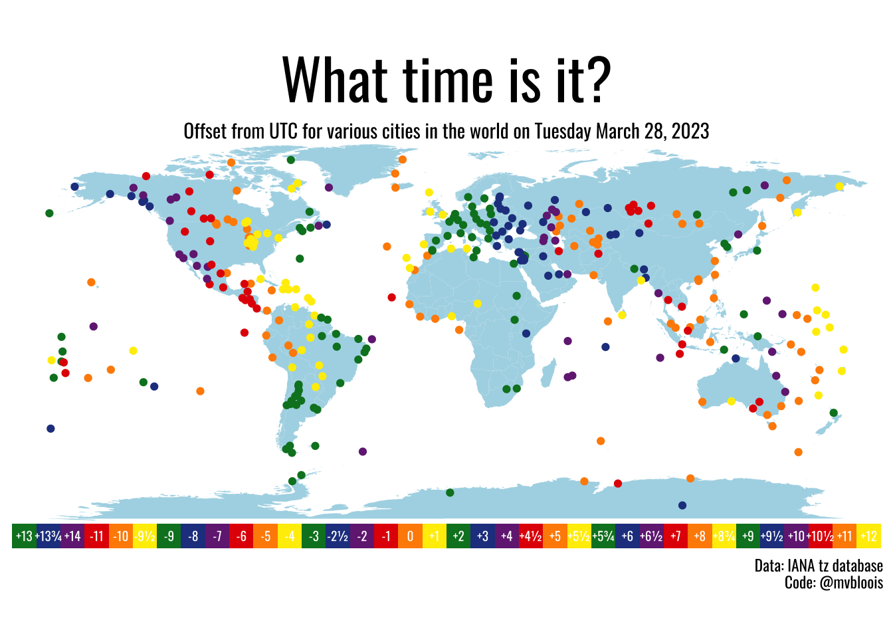

library(tidyverse)
library(tidytext)
library(praise)
library(scales)Time Zones
The Data
The data this week comes from the IANA tz database via the {clock} and {tzdb} packages. Special thanks to Davis Vaughan for the assist in preparing this data!
timezones <- read_csv("timezones.csv")
transitions <- read_csv("transitions.csv")
timezone_countries <- read_csv("timezone_countries.csv")
countries <- read_csv("countries.csv")Making a Time Zone plot
The code is taken almost directly from @mvbloois.
library(tidyverse)
library(patchwork)
library(sf)
library(showtext)
font_add_google("Oswald", "font")
showtext_auto()
showtext_opts(dpi = 300)
world_map <- map_data("world")
pal <- c("#E40303", "#FF8C00", "#FFED00", "#008026", "#24408E", "#732982")
now <- Sys.time()
data <- transitions %>%
group_by(zone) %>%
filter(lubridate::as_datetime(begin) < now) %>%
filter(begin == max(begin)) %>%
ungroup() %>%
inner_join( timezones, by = "zone" ) %>%
mutate(offset_hr = offset / 3600)
plt_1 <- ggplot() +
geom_map(data = world_map,
map = world_map, aes(map_id = region), fill = "lightblue") +
geom_point(data = data,
aes(x = longitude, y = latitude,
colour = factor(offset_hr)), show.legend = FALSE) +
scale_colour_manual(values = rep(pal, times = 6)) +
coord_equal() +
labs(title = "What time is it?",
subtitle = "Offset from UTC for various cities in the world on Tuesday March 28, 2023") +
theme_void() +
theme( plot.title = element_text(family = "font", hjust = 0.5, size = 32),
plot.subtitle = element_text(family = "font", hjust = 0.5) )
levels <- c("+13","+13¾","+14","-11","-10","-9½","-9","-8","-7","-6","-5","-4","-3","-2½","-2","-1","0","+1", "+2","+3","+4","+4½","+5","+5½","+5¾","+6","+6½","+7","+8","+8¾","+9","+9½","+10","+10½","+11","+12")
offsets <- data %>%
distinct(offset_hr) %>%
mutate(offset_txt = scales::label_number(style_positive = "plus")(offset_hr), offset_txt = str_remove(offset_txt, ".00"),
offset_txt = str_replace(offset_txt, ".50", "½"),
offset_txt = str_replace(offset_txt, ".75", "¾")) %>%
mutate(offset_txt = factor(offset_txt, levels = levels))
plt_2 <- offsets %>%
ggplot() +
geom_tile(aes(x = offset_txt, y = 1, fill = factor(offset_hr)),
show.legend = FALSE) +
geom_text(aes(x = offset_txt, y = 1, label = factor(offset_txt)),
family = "font", colour = "white", size = 2.5) +
scale_fill_manual(values = rep(pal, times = 6)) +
labs(caption = "Data: IANA tz database\nCode: @mvbloois") +
coord_equal() +
theme_void() +
theme( plot.caption = element_text(family = "font") )
plt_1 / plt_2 
praise()[1] "You are perfect!"